|
|
Capítulo 12 |
Coordenadas Cartesianas |

Temas Tratados En Este Capítulo:
· Sistemas de Coordenadas Cartesianas
· Los ejes X e Y
· La Propiedad Conmutativa de la Adición
· Valores absolutos y la función abs()
Este capítulo no introduce un nuevo juego, sin embargo repasa ciertos conceptos matemáticos que serán utilizados en el resto de los juegos en este libro.
Cuando miras un juego 2D (como Tetris o un viejo juego de Super Nintendo o Sega Genesis) puedes notar que la mayoría de los gráficos en la pantalla pueden moverse hacia la izquierda o derecha (la primera dimensión) o arriba y abajo (la segunda dimensión, es decir 2D). Para que podamos crear juegos con objetos moviéndose en dos dimensiones (como una pantalla de computadora bidimensional), necesitamos un sistema que pueda traducir un lugar en la pantalla a enteros que nuestro programa pueda interpretar.
Aquí es cuando se utilizan los sistemas de coordenadas Cartesianas. Las coordenadas pueden apuntar a un punto muy específico de la pantalla para que nuestro programa pueda rastrear diferentes areas en la pantalla.
Cuadrículas y Coordenadas Cartesianas
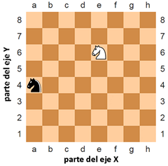
Figura 12-1: Un ejemplo de tablero de ajedrez con un caballo negro en a, 4 y un caballo blanco en e, 6.
Un problema en muchos juegos es cómo hablar de puntos exactos en un tablero. Una solución común a este problema es marcar cada fila y columna individual del tablero con una letra y un número. La Figura 12-1 es un talbero de ajedrez con sus filas y columnas marcadas.
En el ajedrez, el caballo luce como una cabeza de caballo. El caballo blanco se encuentra en el punto e, 6 y el caballo negro en el a, 4. También podemos observar que todos los espacios en la fila 7 y todos los espacios en la columna c se encuentran vacios.
Una cuadrícula con filas y columnas numeradas como el tablero de ajedrez es un sistema de coordenadas cartesianas. Al utilizar una etiqueta para filas y columnas, podemos dar una coordenada para un único espacio en el tablero. Esto realmente nos ayuda a describirle a uan computadora la posición exacta que deseamos. Si aprendiste coordenadas Cartesianas en alguna clase de matemática, sabrás que usualmente se tanto las filas como columnas se representan con números. Esto es útil, porque de otro modo luego de la columna 26 nos quedaríamos sin letras. Dicho tablero se vería como la Figura 12-2.
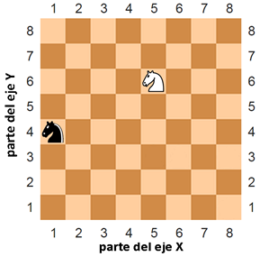
Figura 12-2: El mismo tablero de ajedrez pero con coordenadas numéricas para filas y columnas.
Los números de izquierda a derecha que describen las columnas son parte del eje X. Los números de arriba a abajo que describen las filas son parte del eje Y. Cuando describimos una coordenada, siempre empleamos el eje X primero, seguido del eje Y. Eso significa que el caballo de la figura superior se encuentra en la coordenada 5, 6 (y no 6, 5). El caballo blanco se encuentra en la coordenada 1, 4 (no confundir con 4, 1).
Nota que para mover el caballo negro a la posición del caballo blanco, el caballo negro debe moverse dos espacios hacia arriba y luego cuatro a la derecha. (O moverse cuatro a la derecha y luego dos arriba.) Perno no necesitamos mirar el tablero para deducir esto. Si sabemos que el caballo blanco se encuentra en 5, 6 y el negro en 1, 4, entonces simplemente podemos restar para obtener la información.
Resta la coordenada X del caballo negro y la coordenada X del caballo blanco: 5 - 1 = 4. Eso significa que el caballo negro debe moverse por el eje X cuatro espacios.
Resta la coordenada Y del caballo negro y la coordenada Y del caballo blanco: 6 - 4 = 2. Eso significa que el caballo negro debe moverse por el eje Y dos espacios.
Números Negativos
Otro concepto utilizado en las coordenadas Cartesianas son los números negativos. Estos son números menores a cero. Ponemos un signo menos frente al número para mostrar que es un número netagivo. -1 es menor que 0. Y -2 menor que -1. Y -3 menor que -2. Si piensas en los números regulares (llamados positivos) empezando del 1 e incrementando, puedes pensar en los números negativos comenzando del -1 y decreciendo. 0 en si mismo no es positivo ni negativo. En esta imagen, puedes ver los números positivos creciendo hacia la derecha y los negativos decreciendo a la izquierda:
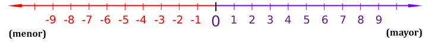
Figura 12-3: Recta numérica.
La línea de números es realmente útil para realizar sumas y restas con números negativos. La expresión 4 + 3 puede ser pensada como que el caballo blanco comienza en la posición 4 y se mueve 3 espacios hacia la derecha (suma implica incrementar, es decir en la dirección derecha).
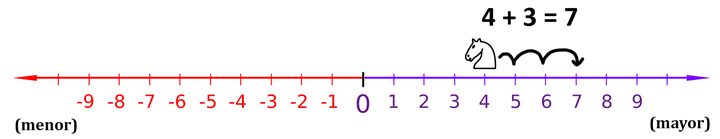
Figura 12-4: Mover el caballo blanco a la derecha suma a la coordenada.
Como puedes observar, el caballo blanco termina en la posición 7. Esto tiene sentido, porque 4 + 3 = 7.
La substracción (resta) puede realizarse moviendo el caballo blanco hacia la izquierda. Substracción implica decrementar, es decir dirección izquierda. 4 - 6 sería el caballero blanco comenzando en la posición 4 y moviéndose 6 espacios a la izquierda, como en la Figura 12-5:
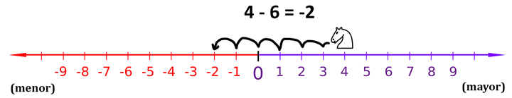
Figura 12-5: Mover el caballo blanco a la izquierda resta a la coordenada.
El caballo blanco termina en la posición -2. Eso significa 4 - 6 = -2.
Si sumamos o restamos un número negativo, el caballo blanco se moverá en direcciones opuestas. Si sumas un número negativo, el caballo se mueve a la izquierda. Si restas un número negativo, el caballo se mueve a la derecha. La expresión -6 - -4 sería igual a -2. El caballo comienza en -6 y se mueve a la derecha 4 espacios. Nota que -6 - -4 es lo mismo que -6 + 4.
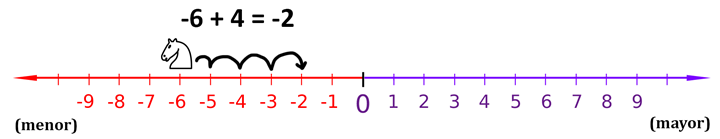
Figura 12-6: Incluso si el caballero blanco comienza en una coordenada negativa, moverse a la derecha suma a la coordenada.
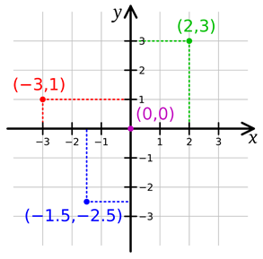
Figura 12-7: Poníendo dos líneas de números juntas se crea un sistema de coordenadas Cartesianas.
La línea de números es igual al eje-X. Si hicieramos que la línea de números vaya de arriba a abajo en vez de izquierda a derecha, sería igual al eje-Y. Sumando un número positivo (o restando un número negativo) movería el caballo hacia arriba de lal ínea, y restando un número positivo (o sumando un número negativo) movería el caballo hacia abaho. Cuando ponemos ambas líneas de números juntas, tenemos un sistema de coordenadas Cartesianas tal como en la Figura 12-7. La coordenada 0, 0 posee un nombre especial: el origen.
Trucos Matemáticos
Sumar o restar números negativos parece fácil cuando tienes una línea de números frente a ti, pero puede ser igual de fácil cuando sólo tienes los números. Aquí hay tres trucos que puedes hacer para que evaluar estas expresiones te sea más sencillo.
Truco 1: “Un Menos Come el Signo Mas a su Izquierda”
El primer truco es si estas sumando un número negativo, por ejemplo; 4 + -2. El primer truco es "un menos come el signo más a su izquierda". Cuando veas un signo menos con un signo más a su izquierda, puedes reemplazar el signo más con el signo menos. La respuesta es la misma, porque sumar un número negativo es lo mismo que restar un número positivo. 4 + -2 y 4 - 2 son equivalentes y dan 2.
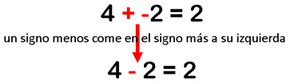
Figura 12-8: Truco 1 - Sumando un número positivo y un número negativo.
Truco 2: “Dos Menos se Combinan En un Mas”
El segundo truco es si estas restando un número negativo, por ejemplo 4 - -2. El segundo truco es "dos menos se combinan en un mas". Cuando veas dos signos menos juntos sin un número entre ellos, pueden combinarse en un signo mas. La respuesta es la misma, porque restar un valor negativo es lo mismo que sumar el mismo valor positivo.
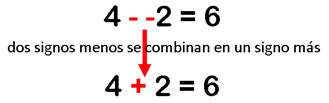
Figura 12-9: Truco 2 - Restando un número positivo y un número negativo.
Truco 3: La Propiedad Conmutativa de la Adición
El tercer truco es recordar que cuando sumas dos números como 6 y 4, no importa en que orden se encuentra. (Esto puede llamarse la propiedad conmutativa de la adición.) Eso significa que 6 + 4 y 4 + 6 ambos son iguales al mismo valor, 10. Si cuentas las casillas en la figura inferior, puedes ver que no importa en que orden tienes los números para sumarition.
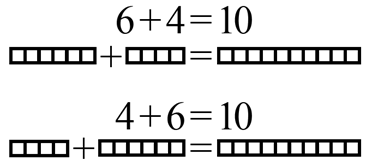
Figura 12-10: Truco 3 - La propiedad conmutativa de la adición.
Digamos que estás sumando un número negativo y un número positivo, como -6 + 8. Porque estas sumando números, puedes invertir el orden de los números sin cambiar la respuesta. -6 + 8 es lo mismo que 8 + -6.
Pero cuando miras a 8 + -6, ves que el signo menos puede comer el signo más a su izquierda, y el problema se convierte en 8 - 6 = 2. Pero esto significa que -6 + 8 ¡también es 2! Hemos reconfigurado el problema para obtener el mismo resultado, pero facilitandonos la resolución sin utilizar una calculadora o la computadora.
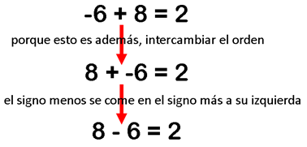
Figura 12-11: Usando nuestros trucos matemáticos juntos.
Valores Absolutos y la Función abs()
El valor absoluto de un número es el número sin el signo négativo delante de él. Esto significa que los números positivos no cambian, pero los negativos se convierten en positivos. Por ejemplo, el valor absoluto de -4 es 4. El valor absoluto de -7 es 7. El valor absoluto de 5 (el cuál es positivo) es 5.
Podemos encontrar que tan lejos se encuentran dos elementos de una línea de números al tomar el valor absoluto de su diferencia. Imagina que el caballo blanco se encuentra en la posición 4 y el negro en la -2. Para encontrar la distancia entre ambos, debes encontrar la diferencia al restar sus posiciones y luego tomando el valor absoluto de dicho resultado.
Esto funciona sin importar el orden de los números. -2 - 4 (esto es, menos dos menos 4) es -6, y el valor absoluto de -6 es 6. Sin embargo, 4 - -2 (esto es, cuatro menos menos 2) es 6, y el valor absoluto de 6 es 6. Utilizando el valor absoluto de la diferencia es una buena práctica para encontra la distancia entre dos puntos en una línea de números (o eje).
La función abs() puede ser utilizada para devolver el valor absoluto de un entero. La función abs() es una función incorporada, por lo que no debes importar ningún módulo para utilizarla. Pasa un entero o un valor flotante y devolvera el valor absoluto:
>>> abs(-5)
5
>>> abs(42)
42
>>> abs(-10.5)
10.5
Sistema de Coordenadas de un Monitor de Computadora
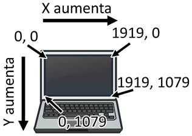
Figura 12-12: El sistema de coordenadas Cartesianas en un monitor de computadora.
Es común que los monitores de computadoras utilizen un sistema de coordenadas con origen (0, 0) en la esquina superior izquierda, el cual se incremente hacia la derecha y abajo. La mayoría de los gráficos de computadora utulizan este sistema, y lo usaremos en nuestros juegos. También es común asumir que los monitores pueden mostrar 80 caracteres por fila y 25 caracteres por columna (ver la Figura 12-12). Este solía ser el máximo tamaño de pantalla que los monitores soportaban. Aunque los monitores actuales pueden mostrar mucho más texto, no asumiremos que la pantalla del usuario es mayor a 80 por 25.
Resumen
Esto no fue mucha matemática para aprender a programar. De hecho, la mayoría de la programación no requiere mucho conocimiento de matemática. Hasta este capítulo, nos las arreglabamos con simples sumas y multiplicaciones.
Los sistemas de coordenadas Cartesianas son necesarios para describir con exactitud donde se encuentra una posición en un área bidimensional. Las coordenadas se componen de dos números: eje-X y eje-Y. El eje-X corre de izquierda a derecha y el eje-Y de arriba a abajo. En una pantalla de computadora (y casi siempre en programación), el eje-X comienza en 0 a la izquierda e incrementa hacia la derecha. El eje-Y comienza en 0 en la parte superior e incrementa hacia abajo.
Los tres trucos que aprendimos en este capítulo facilitan sumar enteros positivos y negativos. El primer truco es un signo menos que comerá un signo más a su izquierda. El segundo truco es que dos signos menos juntos se combinan en un signo más. Y el tercer truco es que puedes intercambiar las posiciones de los números que estés sumando. Esto es llamado la propiedad conmutativa de la adición.
Para el resto de este libro, utilizaremos los conceptos aprendidos en este capítulo en nuestros juegos ya que tendrán áreas bidimensionales en ellos. Todos los juegos gráficos requieren conocimientos del funcionamiento de las coordenadas Cartesianas.